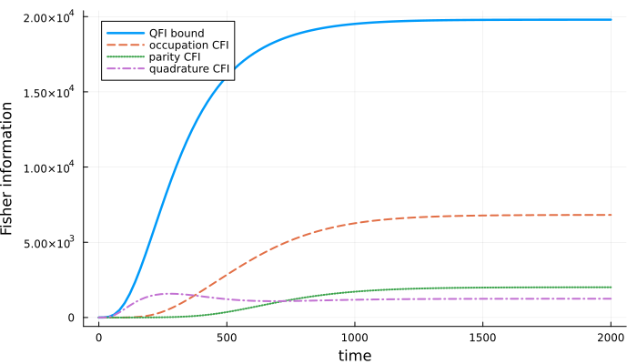
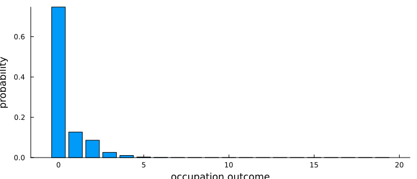

Quantum Fisher Information with Automatic Differentiation
Quantum Fisher information (QFI) answers an optimistic question: if a quantum state $\rho(\theta)$ depends on a parameter $\theta$, how much information about $\theta$ is available in the state before we commit to a particular measurement? For one copy of the state it gives the quantum Cramér-Rao bound
\[\mathrm{Var}(\hat\theta) \geq \frac{1}{F_Q}.\]
The bound is useful only if we can also ask a more practical question: how much information is obtained by the measurements we can actually perform? For a POVM or projective measurement with outcomes $M_i$,
\[p_i(\theta) = \mathrm{Tr}[M_i \rho(\theta)], \qquad F_C = \sum_i \frac{(\partial_\theta p_i)^2}{p_i}.\]
The classical Fisher information (CFI) satisfies $F_C \leq F_Q$. Comparing the two tells us whether a measurement is close to optimal or whether useful information remains hidden in coherences that the measurement does not access.
In this example we estimate the detuning of a driven Kerr parametric oscillator. The derivative $\partial_\Delta \rho(t)$ is obtained by differentiating the SLH time evolution with ForwardDiff.jl. We then compare the QFI with the CFI of three different projective readouts.
using QuantumInputOutput
using SecondQuantizedAlgebra
using QuantumOptics
using LinearAlgebra
using PlotsSLH Model
The Kerr parametric oscillator has Hamiltonian
\[H = -\Delta\,a^\dagger a + K\,a^\dagger a^\dagger a a - G\,(a^\dagger a^\dagger + a a),\]
and one decay channel $L = \sqrt{\gamma}\,a$. We keep the parameters symbolic in the SLH model and provide numerical values only when we translate and evolve it.
h = FockSpace(:kpo)
a = Destroy(h, :a)
@variables Δ::Real K::Real G::Real γ::Real
H = -Δ * a' * a + K * a' * a' * a * a - G * (a' * a' + a * a)
Gkpo = SLH(1, √(γ) * a, H)const K_ = 0.001
const G_ = 0.002
const γ_ = 0.01
const N = 20
b = FockBasis(N - 1)
ψ0 = fockstate(b, 0)
ρ0 = dm(ψ0)
params(Δ_) = Dict(Δ => Δ_, K => K_, G => G_, γ => γ_)Candidate Measurements
classical_fisher_information works with any list of POVM elements. For projective readout, projective_measurement builds the projectors from a Hermitian observable. This keeps the package API independent of the physical system: the readout below happens to use a truncated oscillator basis, but the Fisher-information code only sees projectors.
We compare:
- occupation readout, resolving each basis state;
- parity readout, which intentionally coarse-grains occupation into even and odd outcomes;
- quadrature readout, here represented by the eigenprojectors of $X=a+a^\dagger$ in the same truncated basis.
aqo = destroy(b)
occupation = Operator(b, b, Diagonal(collect(0:(N - 1))))
parity = Operator(b, b, Diagonal((-1.0) .^ collect(0:(N - 1))))
quadrature = aqo + aqo'
measurements = (
occupation = projective_measurement(occupation),
parity = projective_measurement(parity),
quadrature = projective_measurement(quadrature),
)
function cfi_for(measurement, ρ, dρ)
return classical_fisher_information(
ρ,
dρ,
measurement;
probability_floor = 1e-12,
derivative_floor = 1e-6,
)
endDifferentiating the SLH Trajectory
parameter_derivative evolves the density matrix to a chosen time and returns both $\rho(t)$ and $\partial_\Delta\rho(t)$. The estimate keyword names the symbolic parameter to differentiate, while parameter fixes the numerical working point.
ρ, dρ = parameter_derivative(Gkpo, b, ρ0, 2000; estimate = Δ, parameter = params(0.0))
final_information = (
QFI = quantum_fisher_information(ρ, dρ),
occupation = cfi_for(measurements.occupation, ρ, dρ),
parity = cfi_for(measurements.parity, ρ, dρ),
quadrature = cfi_for(measurements.quadrature, ρ, dρ),
)
@info "Fisher information at final time" final_information┌ Info: Fisher information at final time
└ final_information = (QFI = 19795.71854320948, occupation = 6819.391036672639, parity = 2011.4243025589474, quadrature = 1247.8731878014087)Readout Comparison
Repeating the differentiated solve over a grid of readout times gives a direct comparison between the measurement-independent QFI bound and concrete measurement choices. The full occupation measurement keeps more information than parity because it resolves the individual outcomes that parity combines. Quadrature probes a different basis and can reveal parameter sensitivity that is not visible in occupation probabilities alone.
ts = range(0, 2000; length = 100)
F_t = map(ts) do t
ρ, dρ = parameter_derivative(Gkpo, b, ρ0, t; estimate = Δ, parameter = params(0.0))
(
quantum = quantum_fisher_information(ρ, dρ),
occupation = cfi_for(measurements.occupation, ρ, dρ),
parity = cfi_for(measurements.parity, ρ, dρ),
quadrature = cfi_for(measurements.quadrature, ρ, dρ),
)
end
QFI_t = getproperty.(F_t, :quantum)
CFI_occupation_t = getproperty.(F_t, :occupation)
CFI_parity_t = getproperty.(F_t, :parity)
CFI_quadrature_t = getproperty.(F_t, :quadrature)Visualization
p_info = plot(
ts,
QFI_t;
lw = 2.5,
label = "QFI bound",
xlabel = "time",
ylabel = "Fisher information",
grid = true,
size = (700, 400),
)
plot!(p_info, ts, CFI_occupation_t; lw = 2, ls = :dash, label = "occupation CFI")
plot!(p_info, ts, CFI_parity_t; lw = 2, ls = :dot, label = "parity CFI")
plot!(p_info, ts, CFI_quadrature_t; lw = 2, ls = :dashdot, label = "quadrature CFI")
p_info
At the final time we can also inspect the measurement probabilities. A readout with high CFI is not merely one with a broad distribution: it must have outcome probabilities that change strongly when the estimated parameter changes.
occupation_probabilities = povm_probabilities(ρ, measurements.occupation)
p_probs = bar(
0:(N - 1),
occupation_probabilities;
xlabel = "occupation outcome",
ylabel = "probability",
label = "",
grid = false,
size = (700, 300),
)
p_probs
Package versions
using InteractiveUtils
versioninfo()
using Pkg
Pkg.status(
["QuantumInputOutput", "SecondQuantizedAlgebra", "QuantumOptics", "ForwardDiff", "Plots"],
mode = PKGMODE_MANIFEST,
)Julia Version 1.12.6
Commit 15346901f00 (2026-04-09 19:20 UTC)
Build Info:
Official https://julialang.org release
Platform Info:
OS: Linux (x86_64-linux-gnu)
CPU: 4 × AMD EPYC 9V74 80-Core Processor
WORD_SIZE: 64
LLVM: libLLVM-18.1.7 (ORCJIT, znver4)
GC: Built with stock GC
Threads: 4 default, 1 interactive, 4 GC (on 4 virtual cores)
Environment:
JULIA_PKG_SERVER_REGISTRY_PREFERENCE = eager
JULIA_DEBUG = Documenter
JULIA_NUM_THREADS = auto
Status `~/work/QuantumInputOutput.jl/QuantumInputOutput.jl/docs/Manifest.toml`
[f6369f11] ForwardDiff v1.4.1
[91a5bcdd] Plots v1.41.6
[18f9eda6] QuantumInputOutput v0.1.0 `~/work/QuantumInputOutput.jl/QuantumInputOutput.jl`
[6e0679c1] QuantumOptics v1.2.6
[f7aa4685] SecondQuantizedAlgebra v0.8.2This page was generated using Literate.jl.